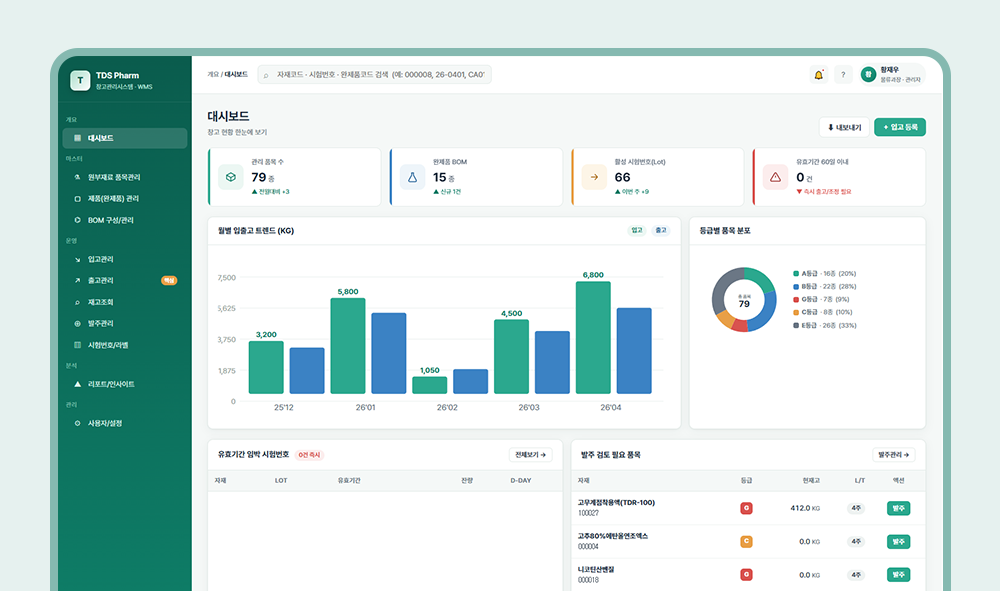
제조
생산 실적 자동 집계 대시보드
수기 집계를 자동화해 실시간으로 생산 현황 파악
제조·물류 특화 AX 구축 파트너
개발 환경도 서버도 준비하실 필요 없습니다. 교육을 통해 첫 프로그램을 직접 만들어 배포합니다.
파이썬 설치부터 서버·데이터베이스까지,
비개발자가 막히는 구간이 전부 세팅된 상태로 도착합니다.
쓰던 업무 파일을 가지고 와서, 교육이 끝날 때 배포된 첫 프로그램을 가지고 돌아갑니다.
필요한 프로그램을 함께 만들고, 이후 직접 운영할 수 있도록 코드와 환경을 인수인계합니다.
| 구분 | 기존 AI 개발 | G2ROW 개발키트 |
|---|---|---|
| 초기 세팅 | 파이썬, 에디터 개별 설치 | 클라우드 접속 즉시 완료 |
| 인프라 구축 | 서버 및 DB 별도 구매 및 연동 필요 | 키트 내 올인원 자동 구성 완료 |
| 필요 역량 | 코딩 및 서버 운영 지식 필요 | 엑셀 활용 및 업무 프로세스 이해도 |
| 첫 결과물 | 수개월 단위의 외주 또는 개인 학습 | 교육 4시간 안에 첫 버전 배포 |
| 유지 보수 | 외주 의존 또는 수정 시마다 추가 비용 발생 | 실무자가 직접 AI로 수정 및 배포 |
하드웨어 · 소프트웨어 · 플랫폼을 하나로 묶은 올인원 상품입니다.
개발에 필요한 모든 환경이 세팅된 상태로 도착합니다.
파이썬(Python) 설치, Claude API 연동, 코드 편집기(VS Code / Claude Code), 웹 서버, 데이터베이스 설치와 설정이 끝난 상태로 제공됩니다.
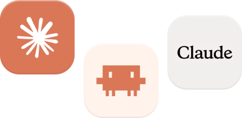
G2ROW 플랫폼에서 요구사항을 입력하여 초안을 만들고, 버튼 하나로 배포까지 끝납니다.
생성한 코드가 그대로 남아 있어, “여기에 이 기능 추가해줘” 라고 요청하며 AI로 계속 다듬을 수 있습니다.
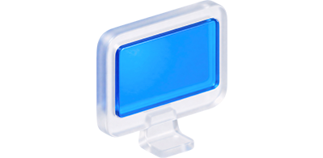
하드웨어 옵션
자리를 적게 차지합니다. 간단한 업무용.
대부분의 제조·물류 업무에 맞는 표준 사양.
데이터가 많고 연산이 무거운 환경.
새로 사지 않으셔도 됩니다. 회사에 남는 PC에 저희가 설치해 드립니다.
대상은 제조·물류 실무자입니다. 개발 경험이 없어도 됩니다.
키트에 접속해서 사용하던 업무 파일을 첫 화면에 띄웁니다.
플랫폼 접속 → 요구사항 입력 → 초안 생성
말로 시키면서 필요한 기능을 붙입니다.
프롬프트 반복 개선
프로그램으로 배포하고, 이후 직접 고칠 수 있게 됩니다.
배포 → 코드 수정
도입 후에도 제대로 활용되지 못하는 시스템을 많이 보았습니다.
그래서 교육과 컨설팅도 실제 업무에서 활용되는 것을 목표로 합니다.
| 현재 | (주)팩앤롤 기술이사, G2ROW 대표 강사 |
|---|---|
| 이력 | OOO OO OOOO 과정 수행 |
| 학력 | OO대학교 컴퓨터OO학부 석사 |
| 전문 분야 | 생성형 AIAX 컨설팅스마트공장 구축업무 자동화 |
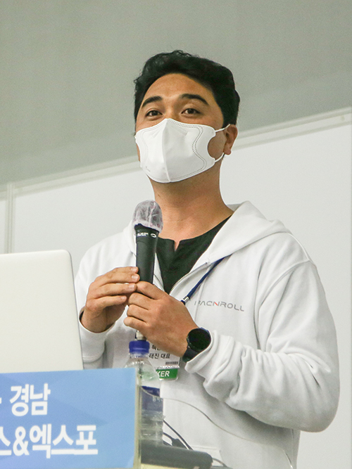
업종별 현장 특성을 이해한 실전 구축 프로젝트를 다수 보유하고 있습니다.
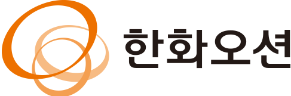
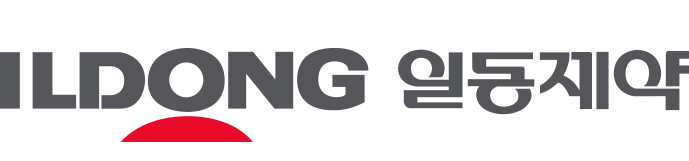
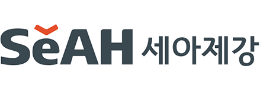
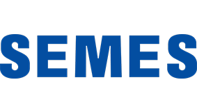
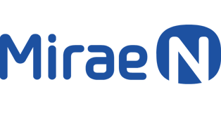
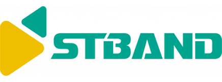
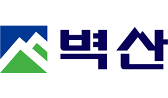
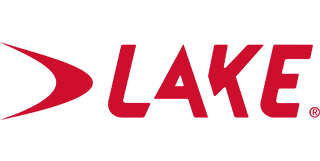
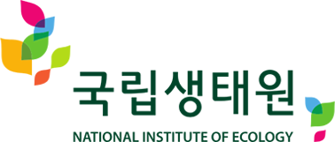
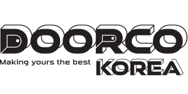
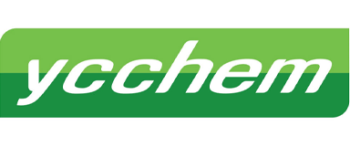
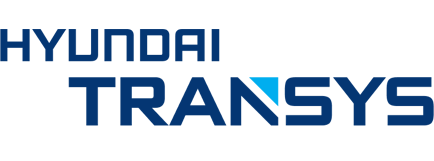
인공지능혁신추진단(KASMO) 인증 공급기업으로,
만족도 4.69점을 기록했습니다.
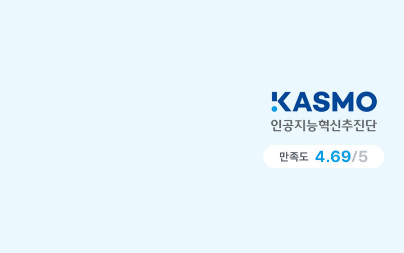
지원사업 준비부터 선정, 수행까지 전 과정을 경험한 노하우를 보유하고 있습니다.
AI를 업무에 적용한 프로젝트를 확인해 보세요.
할 수 있는 것과 없는 것, 비용과 범위를 먼저 확정하고 시작합니다.
더 궁금한 점은 상담에서 바로 여쭤보셔도 됩니다.
네. 엑셀로 업무를 하실 수 있다면 시작할 수 있습니다. 만들고 싶은 프로그램을 글로 작성하면 AI가 코드를 만들어 줍니다. 교육 4시간 안에 직접 하나의 프로그램을 만들어 배포까지 해봅니다.
가능합니다. 처음부터 많은 데이터가 필요하지 않습니다. 먼저, 어떤 업무에 AI를 적용할지 함께 찾고 그 업무에 필요한 데이터가 무엇인지부터 차근차근 정리해 드립니다.
간단한 업무라면 바로 활용할 수 있습니다. 사용하면서 필요한 기능이 생기면 AI에게 요청해 계속 수정할 수 있습니다. 처음부터 완성된 프로그램을 만드는 것이 아니라, 실제로 사용하면서 필요한 만큼 발전시켜 갑니다.
PC 한 대와 그 안에 미리 설치된 개발 환경, 그리고 프로그램을 만들고 배포하는 데 필요한 플랫폼 계정을 제공합니다. 복잡한 개발 환경을 직접 구축하지 않고 바로 시작할 수 있습니다.
네. 최소 사양을 충족하는 기존 PC가 있다면 새로 구매하지 않아도 됩니다. 저희가 필요한 개발 환경을 설치해 드립니다.
현재 고민을 들려주시면, 우리 회사에 맞는 시작점을 함께 찾아드립니다. 영업일 기준 1일 이내에 연락드립니다.